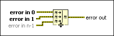

Merge Errors Function
Owning Palette: Dialog & User Interface VIs and Functions
Requires: Base Development System
Merges error I/O clusters from different VIs and functions.
By default, this function looks for errors beginning with the error in 0 parameter and reports the first error found. If the function finds no errors, it looks for warnings and returns the first warning found. If the function finds no warnings, it returns no error. Use exception control to treat what is normally an error as no error or to treat a warning as an error.
To configure the function to return an error cluster that combines all the specified errors/warnings, right-click the function and select Retain All Errors.

 Add to the block diagram Add to the block diagram |
 Find on the palette Find on the palette |